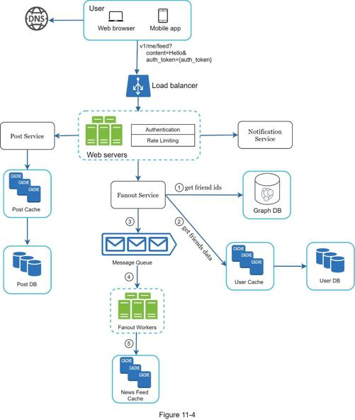
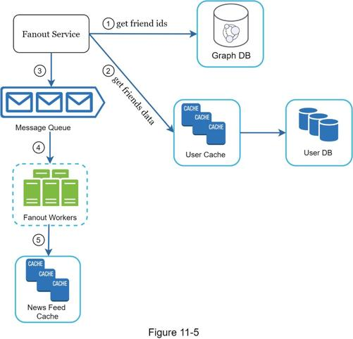
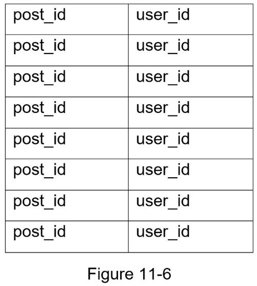
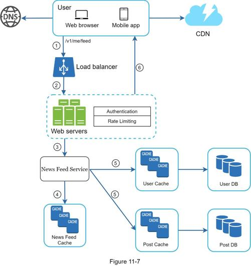
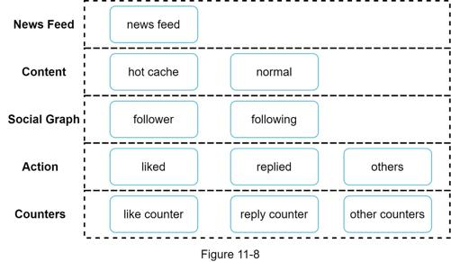

The high-level design briefly covered two flows: feed publishing and news feed building. Here, we discuss those topics in more depth.
Figure 11-4 outlines the detailed design for feed publishing. We have discussed most of components in high-level design, and we will focus on two components: web servers and fanout service.

Besides communicating with clients, web servers enforce authentication and rate-limiting. Only users signed in with valid auth_token are allowed to make posts. The system limits the number of posts a user can make within a certain period, vital to prevent spam and abusive content.
Fanout is the process of delivering a post to all friends. Two types of fanout models are: fanout on write (also called push model) and fanout on read (also called pull model). Both models have pros and cons. We explain their workflows and explore the best approach to support our system.
Fanout on write. With this approach, news feed is pre-computed during write time. A new post is delivered to friends’ cache immediately after it is published.
Pros:
•The news feed is generated in real-time and can be pushed to friends immediately.
•Fetching news feed is fast because the news feed is pre-computed during write time.
Cons:
•If a user has many friends, fetching the friend list and generating news feeds for all of them are slow and time consuming. It is called hotkey problem.
•For inactive users or those rarely log in, pre-computing news feeds waste computing resources.
Fanout on read. The news feed is generated during read time. This is an on-demand model. Recent posts are pulled when a user loads her home page.
Pros:
•For inactive users or those who rarely log in, fanout on read works better because it will not waste computing resources on them.
•Data is not pushed to friends so there is no hotkey problem.
Cons:
•Fetching the news feed is slow as the news feed is not pre-computed.
We adopt a hybrid approach to get benefits of both approaches and avoid pitfalls in them. Since fetching the news feed fast is crucial, we use a push model for the majority of users. For celebrities or users who have many friends/followers, we let followers pull news content on-demand to avoid system overload. Consistent hashing is a useful technique to mitigate the hotkey problem as it helps to distribute requests/data more evenly.
Let us take a close look at the fanout service as shown in Figure 11-5.

The fanout service works as follows:
1. Fetch friend IDs from the graph database. Graph databases are suited for managing friend relationship and friend recommendations. Interested readers wishing to learn more about this concept should refer to the reference material [2].
2. Get friends info from the user cache. The system then filters out friends based on user settings. For example, if you mute someone, her posts will not show up on your news feed even though you are still friends. Another reason why posts may not show is that a user could selectively share information with specific friends or hide it from other people.
3. Send friends list and new post ID to the message queue.
4. Fanout workers fetch data from the message queue and store news feed data in the news feed cache. You can think of the news feed cache as a <post_id, user_id> mapping table. Whenever a new post is made, it will be appended to the news feed table as shown in Figure 11-6. The memory consumption can become very large if we store the entire user and post objects in the cache. Thus, only IDs are stored. To keep the memory size small, we set a configurable limit. The chance of a user scrolling through thousands of posts in news feed is slim. Most users are only interested in the latest content, so the cache miss rate is low.
5. Store <post_id, user_id > in news feed cache. Figure 11-6 shows an example of what the news feed looks like in cache.

Figure 11-7 illustrates the detailed design for news feed retrieval.

As shown in Figure 11-7, media content (images, videos, etc.) are stored in CDN for fast retrieval. Let us look at how a client retrieves news feed.
1. A user sends a request to retrieve her news feed. The request looks like this: /v1/me/feed
2. The load balancer redistributes requests to web servers.
3. Web servers call the news feed service to fetch news feeds.
4. News feed service gets a list post IDs from the news feed cache.
5. A user’s news feed is more than just a list of feed IDs. It contains username, profile picture, post content, post image, etc. Thus, the news feed service fetches the complete user and post objects from caches (user cache and post cache) to construct the fully hydrated news feed.
6. The fully hydrated news feed is returned in JSON format back to the client for rendering.
Cache is extremely important for a news feed system. We divide the cache tier into 5 layers as shown in Figure 11-8.

•News Feed: It stores IDs of news feeds.
•Content: It stores every post data. Popular content is stored in hot cache.
•Social Graph: It stores user relationship data.
•Action: It stores info about whether a user liked a post, replied a post, or took other actions on a post.
•Counters: It stores counters for like, reply, follower, following, etc.